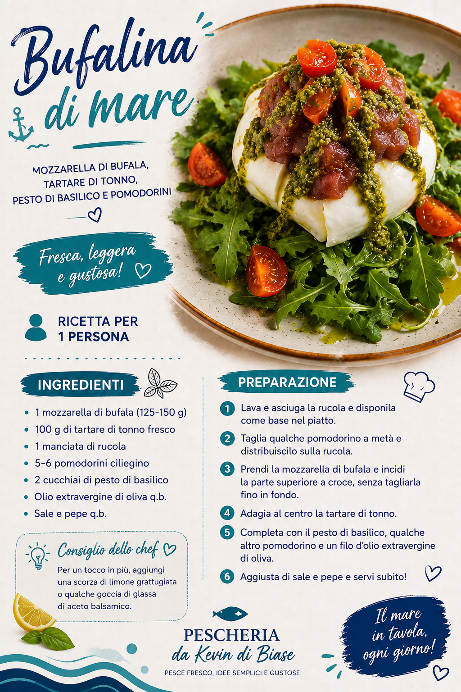

Pescheria da Kevin Di Biase
Scopri come preparare il pesce fresco acquistato alla nostra pescheria.
💙 Pesce fresco, qualità e passione!

Fresca, leggera e gustosa!
Una deliziosa mozzarella di bufala con tartare di tonno fresco, rucola, pomodorini e pesto di basilico.